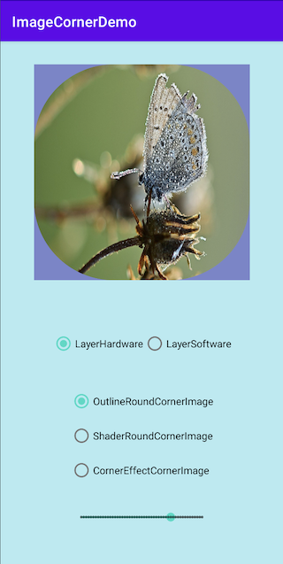
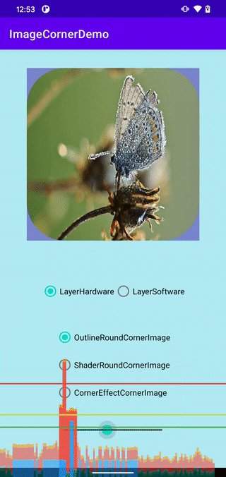
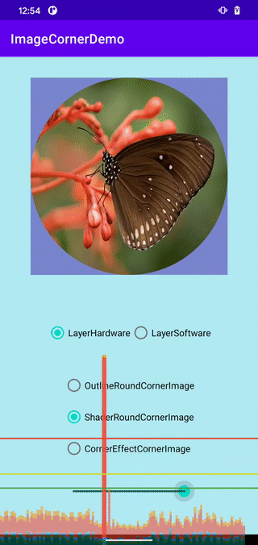
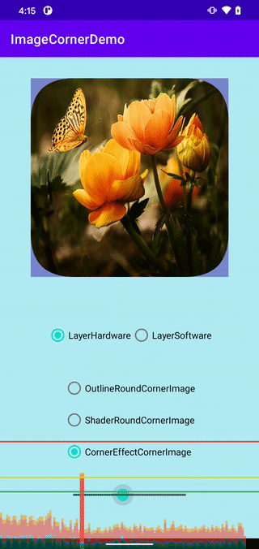

在iOS平台中，给View指定圆角是很方便的。只需要在代码中设置layer.cornerRadius即可。但在Android平台中，事情却有些复杂：
- 5.0之前，需要以背景贴图、
Path 或CornerPathEffect来实现圆角
- 5.0之后，新增
ViewOutlineProvider 也可以来实现圆角
demo效果
demo效果图如下：

demo完整代码地址：ImageCornerDemo
实现方式
下面我们就分别来看一下如何基于Path, CornerPathEffect和ViewOutlineProvider 这三个API实现圆角。
方法一：基于Path的实现
1
2
3
4
5
6
7
8
9
10
11
12
13
14
15
16
17
18
19
20
21
22
23
24
25
|
internal class ShaderRoundCornerImage(context: Context) : CornerResizeView(context) {
private var radii: FloatArray = floatArrayOf(
20f, 20f, 20f, 20f, 20f, 20f, 20f, 20f
)
@RequiresApi(Build.VERSION_CODES.LOLLIPOP)
override fun onDraw(canvas: Canvas) {
drawPath(canvas)
}
// Draw the round corner path and the image
@RequiresApi(Build.VERSION_CODES.LOLLIPOP)
private fun drawPath(canvas: Canvas) {
path.reset()
path.addRoundRect(bounds, radii, Path.Direction.CW) // Step 1
canvas.drawPath(path, paint) // Step 2
}
override fun changeCorner(percent: Int) {
val radius = width * percent / 100f
radii.fill(radius)
invalidate() // Step 3
}
}
|
代码说明：
- Step 1: 给path指定一个圆角矩形，radii是一个包含四组[X, Y]的数组，共八个数
- Step 2: 将path绘制到canvas上
- Step 3: 更新view
方法二：基于ViewOutlineProvider 的实现
1
2
3
4
5
6
7
8
9
10
11
12
13
14
15
16
17
18
19
20
21
22
|
// Step 1
private class ClipOutlineProvider(var radius: Float) : ViewOutlineProvider() {
override fun getOutline(view: View, outline: Outline) {
outline.setRoundRect(
0, 0, view.width, view.height, radius
)
}
}
internal class OutlineRoundCornerImage(context: Context) : CornerResizeView(context) {
private val clipOutlineProvider = ClipOutlineProvider(20f) // Step 2
init {
outlineProvider = clipOutlineProvider // Step 3
clipToOutline = true // Step 4
}
override fun changeCorner(percent: Int) {
clipOutlineProvider.radius = width * percent / 100f
invalidateOutline() // Step 5
}
}
|
代码说明：
- Step 1: 实现一个圆角
ViewOutlineProvider
- Step 2: 创建实例并指定圆角弧度
- Step 3: 指定outlineProvider
- Step 4: 设置为true表示使用该outline来裁切view的内容
- Step 5: 更新outline
需要注意的是，outline需要使用invalidateOutline 来请求更新
方法三：基于CornerPathEffect来实现
1
2
3
4
5
6
7
8
9
10
11
12
13
14
15
16
17
18
19
20
21
22
23
|
internal class CornerEffectCornerImage(context: Context) : CornerResizeView(context) {
private var cornerEffect = CornerPathEffect(20f)
override fun onDraw(canvas: Canvas) {
// Install the corner effect to the drawable's paint
drawable.paint.pathEffect = cornerEffect // Step 1
// Set the bitmap shader to the drawable's paint
drawable.paint.shader= shader
drawable.setBounds(0, 0,width,height)
drawable.draw(canvas)
}
override fun changeCorner(percent: Int) {
// Percent to radius value
val radius =width* percent / 100f
// Update effect with new radius
cornerEffect = CornerPathEffect(radius) // Step 2
invalidate() // Step 3
}
}
|
代码说明：
- Step 1: 给drawable的paint指定cornerEffect
- Step 2: 重建cornerEffect
- Step 3: 更新view
性能

Outline方式

Path方式

Corner方式
通过HWUI呈现模式分析 可以看出，三种实现方式，性能上差异不大（Outline方式性能应该更高一些）。
总结
- 通常情况下，
Path/ViewOutlineProvider/CornerEffect三种方式性能相当，也都可以在Android 5.0+版本中正常工作（无论hardware/software layer）
- 当View的圆角需要频繁变化时，
ViewOutlineProvider方式性能更高，因为它的invalidateOutline 函数只会让outline重建和更新，而不是整个view（invalidate 会更新整个view）
- 从功能上，
Path/ViewOutlineProvider是比较接近的，不过后者不支持setPath设置复杂形状（如三角形），无法实现复杂的边框裁剪，只支持规则形状如rect, round rect, oval.
CornerEffect等PathEffect的继承者，更适合于实现复杂的边框效果，比如虚线（DashPathEffect）、离散线（DiscretePathEffect）等